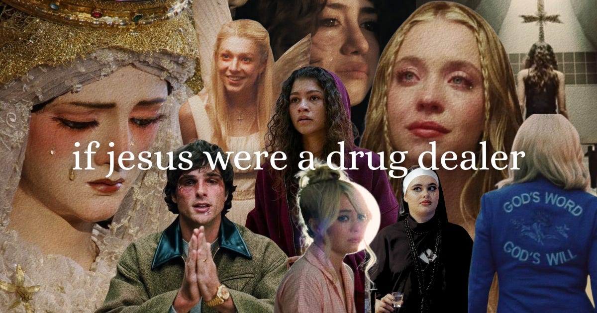

Pop culture
Film, television, platform behavior, and the cultural ideas hiding inside whatever everyone is talking about.
An independent publication about pop culture, music, and what it feels like to live on the internet.
As of August 2026
I founded Offline Crush as a home for cultural criticism, internet rabbit holes, artist discovery, and ideas that do not fit neatly into one category. I run it end to end: editorial strategy, writing, art direction, design, audience growth, and partnerships.
Film, television, platform behavior, and the cultural ideas hiding inside whatever everyone is talking about.
Digital life, forgotten corners of the web, product decisions, and how online spaces shape the people inside them.
Artist discovery, listening culture, interviews, festivals, and the worlds musicians build around their work.

From vinyl to streaming to whatever TikTok is doing to our brains, every shift in technology has reshaped how we find and experience music. The tools evolve constantly, and so do the ways we stumble across new songs.
Lately, though, discovery has felt frustratingly impersonal. Spotify playlists cycle the same five tracks, YouTube pushes sped-up remixes of songs you've already searched, and TikTok floods us with snippets engineered solely for viral moments.
The piece went viral—23.4K likes, 350 comments, and 3.75K restacks—and turned the newsletter into a brand.
Read on Substack
I took the personal-curriculum format and pointed it at the internet itself.
Read on Substack
A footnoted history of how Spotify's UI changed — and what those changes reveal.
Read on Substack
A reading of Euphoria as a modern retelling of Christ, faith, temptation, and salvation.
Read on Substack
A timely cultural argument packaged as an invitation to mourn what social platforms lost when conversation became content.
Read on Substack
An artist-discovery interview about Seattle, the internet, and making indie pop for romantic overthinkers.
Read on Substack
Complimentary media access in exchange for original pre- and post-festival coverage. The first deliverable reframes solo festival anxiety as a practical, personal culture guide.
Read the first storyA commissioned Offline Crush post supported by a paid fee and gifted book box. The collaboration brings the publication’s culture-first voice into books and reading discovery.
Commissioned editorial postMonthly subscriber data shown through April 2026.
A reader made this for me. My colors, my aesthetic, and the frog from my Substack name. I use frogs as a motif: whimsical, cozy, weird, a little grotesque.